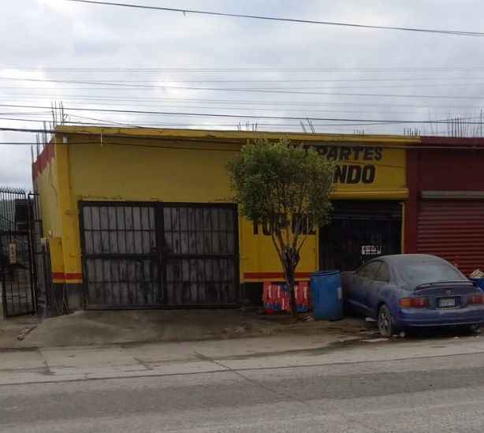

HISTORIA
En los 2000, surgio la idea de emprender tras el cierre de un anterior negocio de autopartes. Esto marco el inicio de un nuevo capitulo con la apertura de nuestro propio establecimiento en el mismo sector. A lo largo del tiempo, hemos enfrentado experiencias, desafios y logros en esta historia empresarial. Con el tiempo, hemos mejorado constantemente y, al reconocer oportunidades de crecimiento, decidimos integrar el servicio de taller mecanico. Esto ha resultado ser un exito, fortaleciendo nuestra oferta y proporcionando un excelente servicio a nuestros clientes.
MISIÓN
Su principal objetivo es proporcionar a los clientes soluciones y servicios excepcionales que satisfagan sus necesidades y expectativas. Se esfuerzan por alcanzar la excelencia en cada aspecto de su trabajo, demostrando dedicacion y profesionalismo en todas las interacciones con los clientes.
VISION
Como propietario de este negocio de autopartes y taller mecanico, la vision es ser reconocido como un referente en el sector automotriz. Nos esforzamos por ofrecer no solo productos de calidad, sino tambien servicios mecanicos excepcionales que inspiren confianza en nuestros clientes nuestra vision es ser mas que un negocio; queremos ser una experiencia automotriz completa y confiable para nuestra comunidad.


©2024. Derechos reservados
Desarrollado por: Dulce Ximena Ramirez Quintero Matricula:02117043 Grupo:606
Plantel Nueva Tijuana